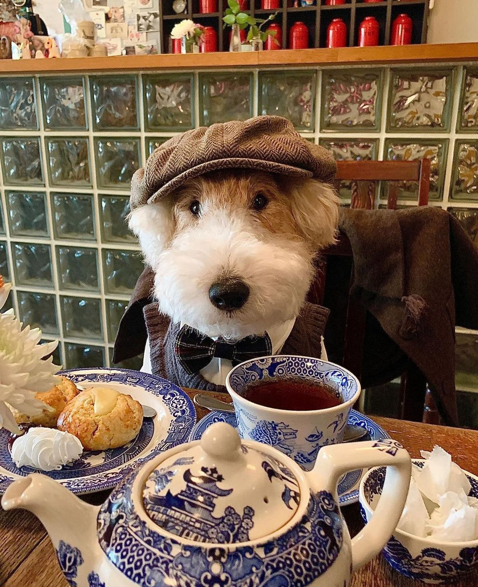

Ha pasado su tiempo. Un trimestre de descanso y relajación. De júbilo y tranquilidad. ¿Qué más se le puede pedir a la vida luego de tal manera de desaparecer el sol del día, aquella vitamina D que se vuelve recurso tan preciado? Pero Señor, ¿dónde estuvieron aquellos mundos prometidos, realidades ideales, tan irresponsables como futuras promesas? Nada fue como lo contado, varados quedamos todos esperando para subir aquel arcoíris de nuestro crecer.
« ¡Nada que hacer! »Y con esas tres palabras en sencillo énfasis, ligeras en la boca, tenemos que seguir.
Qué no contarte, Daniela.
Del perro que me persigue trotando, de la decisión de último minuto que tomo, de la mente que me olvida si cerré la puerta de la residencia. Del lápiz que tomo, del café popeador, de lo que me gustaría haber dicho o hecho. La infancia que no viví junto a ti, de mi calor que te abriga muchas noches, y esos ojos gatunos que me derriten.
Alaridos en vano convierten aquellos quienes no puedan escuchar historias de sus seres queridos. ¡Porque qué fácil es hablar! ¡Y hablo y chamullo! ¿Será que les falta creatividad? ¿O por flojera no hablan, esos capullos? Cuesta la voluntad. Pero mira lo gratis que me sale hablar farullo.
Dama, hoy nos vemos. Sí, hoy. Porque a las 0:06 del día que leíste esto, tengo ganas de verte y quiero sacarme el pase con habladurías, dejarte en la cabeza semilla de mi dulzor verbal. Quiero que hoy nos tomemos ese café delicioso, con gusto gustoso, grrrr pomposo y sabor frutal. Que me cuentes tu vida, veamos la serie prometida, o descansemos en tu cama, porque qué calor hace estos días...
He visto muchas cosas en la Internet. ¿Me asustarán? Entenderás tú mis temores, porque yo veo pronto el
futuro, y cómo vende en el mundo cibernético el pánico. ¿Y cómo no tensar las pompas? Con tanta bomba y
muerte, uno en esta larga faja de tierra algo le queda de suerte. Y ni pensar en cuándo se irá. ¿Se irá?
¿Qué más da? Todo tiene su final.
Excepto esos besitos que me das. Voy a buscarlos terciando entre el mundo y sus reglas, la ficción y
desficción, para que me vuelvas a acalorar con esos labios.
Girl. Cómo pasa el tiempo. Habíamos parpadeado recién en el Golfo Di N. y ahora bombardearon el Golfo y ahora WOWOWO. Ya estás de vuelta en tu mundito, qué falta te hacía, volver a tu rutina y sentir aquella montaña que escalar. Te falta poco para esa cima, vívela porque el camino hacia arriba no lo subes otra vez más. Cómo nos quejamos de aquello que nos da vida hasta que se nos va.
Hoy soñé con el último respiro de mi abuela. Quizá no escuchaste mi gemido, que si mis sentidos no fallan, solté al despertar. Mi abuela más querida le detectaron cáncer y entre una denuncia, cambio de lugar, recalibrar mi futuro, no he podido registrar. Y yo duro para que me llegue el golpe de aquello que dejo pasar. Se me acumula en la piel hasta que no puedo más. Soñé con estar en su sofá, no necesariamente en quejidos del cáncer, sino un simbólico último respiro, en el que ella su respiración detuvo frente a mis ojos, sus ojos navegando una última vez los míos. Mi reacción tan intensa que gracias a la biología que pude despertar. ¿Volveré a verla? ¿Volveré a hablar con ella, en el mismo departamento de los domingos, con el arrocito y condimentos que yo consideraba Michelin, el Internet ligeramente más rápido que me alegraba surfear, de mi tía con mis abuelos? ¿Cómo puede conflictarme tanto el mundo, si apenas llegué recién?
« ¡Nada que hacer! »Qué hará tan caro esos paninis del hombre panini. La experiencia italiana. ¿Qué habrá de especial? ¿Y si te hago un pancito yo, pero te bailo un baile? Quizá es el futuro de nuestra relación - aprender de lo observado y replicarlo en la calidad de nuestro hogar. Abaratamos costos y tenemos una excusa para pololear at home. ¿Quién no se busca una vida tranquila luego de la vejez, a los... 23? Oye, igual piénsalo: en las estadísticas la gente muere a los 80, entonces los 40 es la mitad del promedio. ¿Ya se nos fue un tercio? Si pensamos más, ¡no tenemos tiempo! Pero menos mal no es así, después de un respiro suave y profundo, porque realmente la gente se siente joven hasta que se deja de querer. En la subjetividad del tiempo igual uno no sabe medir el gris y se nos va el blanco y el negro - una semana puede ser una eternidad, y dos años un parpadeo. Simple su solución, de vivir por lo menos unos días en un ligero elevado esfuerzo, y hacer los minutos ignorados en algo con valor. Tanta esencia y olor pa' la pieza y dónde queda ponerle nuestro ambientador natural a esas 24 horas que son otorgadas al más pobre y al más rico.
En fin, llevo varios días caminando a la peguita. Estoy empezando a ahorrar dinero, como puedes imaginarte
luego del centenar de gastos que tengo pendiente, y siendo feliz en ignorancia de que no hemos todavía
cotizado el pronto abogado. Toca abaratar gastos. Me propuse incluso dejar de tomar también, ¿sabes? Desde
la semana pasada. Dejé de tomar.
Uber.
Hablando de tomar alcohol, es mes de Ramadán. No he ayunado como habrás visto, no he siquiera practicado la religión desde quizá febrero del año pasado, en ninguna de sus matices, aparte del común múltiplo de (espero...) lo que imparten las religiones: sé bueno. Haz cosas buenas, dentro de lo que te quepa en la voluntad, respeta tus alrededores y no mates personas. Igual cuesta... La semana pasada maté a dos personas, pero esta semana estoy limpio de homicidios - es cuestión de ser un buen creyente. En una nota menos goofy, dijiste que ibas a ver historia moderna, ¿no? ¿O historia contemporánea...? Ambas estarán interesantes para que me cuentes tus aprendizajes al finalizar el día, de ser que quieras. Tómalo como que soy tu pupilo para el método Feynmann. Me da curiosidad que me cuentes del Imperio Otomano. Lo que he leído de él, es que fue una capa protectora de lo que es ahora la degeneración del mundo, de la misma forma que la existencia de la Unión Soviética fue una capa protectora de lo que es ahora el mundo entero bajo el sistema neoliberal. No he investigado mucho al respecto pero por lo que tengo entendio la Guerra Fría fue el último momento en el que se vivió un mundo con una "alternativa". Lo único que queda es China, y si acaso. ¿Conoces la cultura del 996? Al menos ya algo reducido, todavía existente por ejemplo en el sector de la tecnología en China, aparte de más encima ilegal, es una práctica donde los chinos trabajan de las nueve de la mañana a las nueve de la noche, seis días a la semana. 72 horas. Igual ahora sus horas máximas semanales de labor son 40. Pero si China es comunista, y Chile ahora tiene una jornada de 40 horas, ¿eso hará a Chile comunista? ¿O... Países Bajos con un promedio de 29-32 horas a la semana...? ¿O varios países nórdicos con 35...? ¿Será el mundo comunista? ¿Entonces la extrema derecha es... la resistencia? Me rindo, he acabado mi cuota de pensamiento profundo semanal. Devuélvanme mis reels.
Entre tanto, ¿qué queda? Regocíjate, que el escrito te aliviane el verano, la tanta humanidad junta, la tarde que deberás superar - y podrás, como todo año anterior. Me imagino que debe dar flojera, no me detengo para pensar. Qué tan bueno sería estar acostadito sin sentir el peso de la realidad y el tiempo. Sólo vivir en lujo. Igual ¿qué más da? La vida es buena. Y más contigo.
¿Cuánto hablo, ah?
En fin. Disfruta el día, aprovecha la sombra del árbol que quizá tengas cerca tuyo, o el aire del lugar donde te encuentres, artificial o natural. Observa la forma de los palitos rotos del cesped cesposo. Y cuéntamelo todo al llegar hoy, ¿ya?
Te veo.
Y te veo hoy.